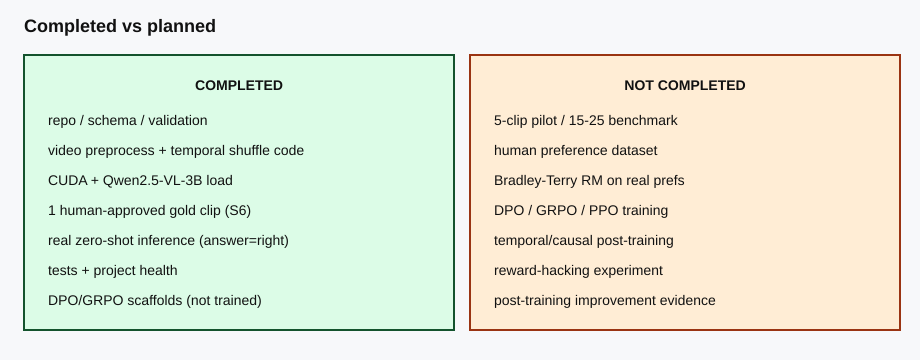

What We Built
- Dataset schema, validation, leakage checks
- Video preprocessing & frame sampling
- Qwen2.5-VL load + inference path
- Human review / gold eligibility process
- DPO / GRPO / reward scaffolds
- Project-health audits & tests
What Actually Worked
- CUDA + Qwen2.5-VL-3B-Instruct on RTX 3060
- Real Mac King S6 video end-to-end
- One human-approved gold example
- Zero-shot answer right = GT right
- n = 1, accuracy 1.0 (not generalization)
What We Would Have Done Next
- Approve ~5 gold clips, then 15–25
- Collect human preference pairs
- Train BT reward model (optional)
- Run DPO + GRPO
- Temporal shuffle & reward-hacking eval
Visual pipeline

Real result (S6)

Question: Which hand contains the coin after the apparent transfer? Model: right GT: right Correct: yes n = 1 · accuracy = 1.0 Evidence: reports/real_zero_shot_baseline/
This demonstrates a real zero-shot multimodal pipeline. It does not prove strong reasoning or that post-training would help.
Learning methods
Completed vs planned
